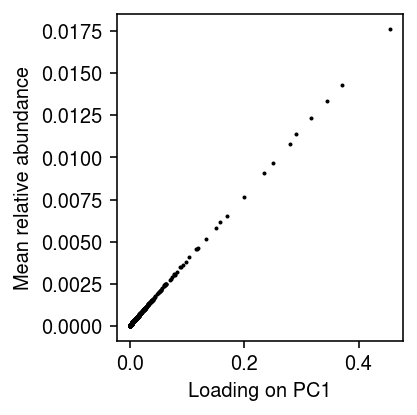

PCA of bulk RNA-seq data
Table of Contents
Introduction
Jean Morrison observed that the first principal component explained 97% of variance in a bulk RNA-seq data set, and the loadings were highly correlated with per-gene mean expression. Here, we show that this result is expected when analyzing the gene-by-sample matrix – it corresponds to the fact that variation in RNA-seq levels can be adequately described simply by a mean and a variance per gene.
Setup
import numpy as np import pandas as pd import sklearn.decomposition as skd
%matplotlib inline %config InlineBackend.figure_formats = set(['retina'])
import matplotlib.pyplot as plt plt.rcParams['figure.facecolor'] = 'w' plt.rcParams['font.family'] = 'Nimbus Sans'
PCA of GEUVADIS RPKM
Read the matrix of RPKM.
dat = pd.read_table('/project2/compbio/geuvadis/analysis_results/GD462.GeneQuantRPKM.50FN.samplename.resk10.txt.gz', sep='\t') dat.shape
(23722, 466)
Compute the truncated SVD.
fit = skd.PCA(n_components=10, random_state=1).fit(dat.iloc[:,4:].values)
Report the variance explained by the top PCs.
plt.clf() plt.gcf().set_size_inches(4, 2) plt.bar(np.arange(10), fit.explained_variance_ratio_, color='k') plt.xticks(np.arange(10), 1 + np.arange(10)) plt.ylim(0, 1) plt.xlabel('Principal component') plt.ylabel('PVE') plt.tight_layout()
Plot the sample loading on the first PC against the mean RPKM per gene.
plt.clf() plt.gcf().set_size_inches(3, 3) plt.scatter(fit.transform(dat.iloc[:,4:].values)[:,0], dat.iloc[:,4:].mean(axis=1), s=1, c='k') plt.xlabel('Loading on PC1') plt.ylabel('Mean RPKM') plt.tight_layout()

PCA of GEUVADIS relative abundances
Read the matrix of read counts.
reads = pd.read_table('/project2/compbio/geuvadis/analysis_results/GD660.GeneQuantCount.txt.gz', sep='\t')
Compute relative abundances.
temp = reads.iloc[:,4:].values lam = temp / temp.sum(axis=0)
Compute the truncated SVD.
fit_lam = skd.PCA(n_components=10, random_state=1).fit(lam)
Report the variance explained by the top PCs.
plt.clf() plt.gcf().set_size_inches(4, 2) plt.bar(np.arange(10), fit_lam.explained_variance_ratio_, color='k') plt.xticks(np.arange(10), 1 + np.arange(10)) plt.ylim(0, 1) plt.xlabel('Principal component') plt.ylabel('PVE') plt.tight_layout()
Plot the sample loading on the first PC against the mean relative abundance per gene.
plt.clf() plt.gcf().set_size_inches(3, 3) plt.scatter(fit_lam.transform(lam)[:,0], lam.mean(axis=1), s=1, c='k') plt.xlabel('Loading on PC1') plt.ylabel('Mean relative abundance') plt.tight_layout()
